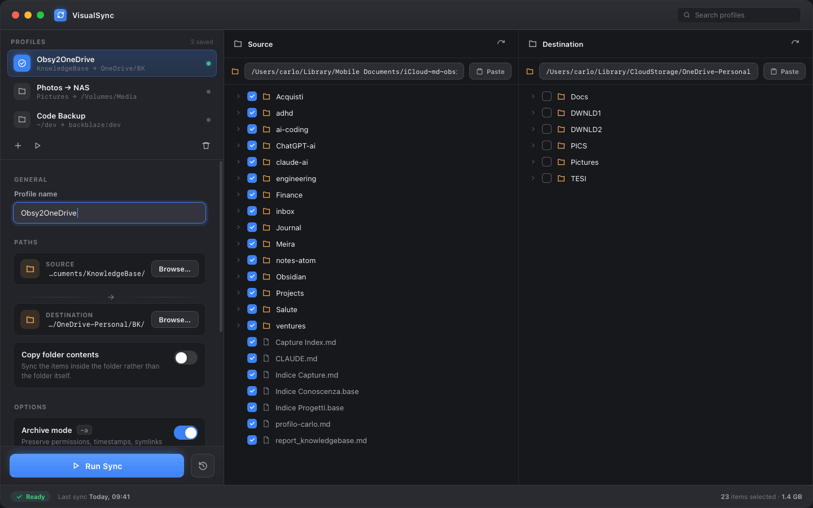

VisualSync is a native macOS app for backing up and mirroring folders. All the power of rsync — saved profiles, archive mode, dry runs — driven by checkboxes and a clear two-pane view.

rsync is the best backup tool on the Mac. Its interface just happens to be a manual page.
VisualSync wraps rsync in a calm, native interface. You see your source and destination side by side, tick exactly what to sync, and flip options like archive mode or compression as plain switches — each one labeled with the flag it maps to.
Save a setup once as a profile and re-run it in a click. Always preview with a dry run before anything touches disk. No memorizing flags, no fear of --delete.
Store source, destination and options as a named profile. Re-run any backup with a single click.
Source and destination trees side by side, with checkboxes on every folder and file. See exactly what moves.
Archive mode, compression, delete-extraneous and more as labeled switches — no cheat sheet required.
Run with -n to see every change before it happens. Nothing touches disk until you say so.
Editable path fields above each pane — paste a long path straight in, or pick a folder with the system browser.
Every run is logged with timestamp and size, so you always know when a profile last synced.
No terminal, no man pages. Here's the whole flow.
Hit + in the Profiles list and give your backup a name — e.g. “Photos → NAS”.
Paste the paths into the fields above each pane, or click Browse to pick folders.
Tick the folders and files in the source tree. Toggle options like archive mode or compression.
Keep Dry run on and press Run Sync to see every change rsync would make — safely.
Happy with the preview? Turn off Dry run and hit Run Sync. The profile remembers everything for next time.
Select the profile and press play. Sync history shows when it last ran and how much moved.
Download the signed app, or install with Homebrew. Source is on GitHub under the MIT license.
I build small, focused native apps that take something powerful but intimidating and make it feel obvious. VisualSync started as a tool for my own Obsidian-to-OneDrive backups — I was tired of retyping rsync flags and second-guessing --delete.
If it's useful to you too, that's the whole point. Feedback, bug reports and ideas are always welcome.